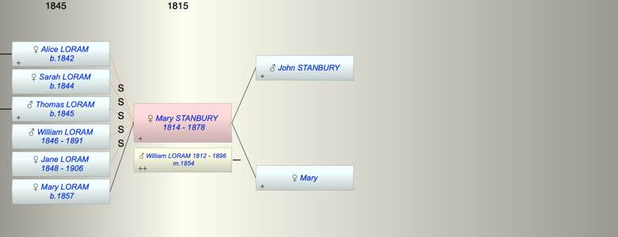

| [Index] |
| Mary STANBURY (1814 - 1878) |
|  |
| b. 1814 at Drewsteignton |
| m. 1854 William LORAM (1812 - 1896) |
| d. 1878 aged 64 |
| Near Relatives of Mary STANBURY (1814 - 1878) | ||||||
| Relationship | Person | Born | Birth Place | Died | Death Place | Age |
| Father in Law | Thomas LORAM | |||||
| Mother in Law | Sarah YABSLEY | |||||
| Father | John STANBURY | |||||
| Mother | Mary | |||||
| Self | Mary STANBURY | 1814 | Drewsteignton | 1878 | 64 | |
| Husband | William LORAM | 1812 | Alphington | Mar 1896 | Alphington | 84 |
| Step Daughter | Alice LORAM | 1842 | Alphington | Y | ||
| Step Daughter | Sarah LORAM | 1844 | Alphington | Y | ||
| Step Son | Thomas LORAM | 1845 | Alphington | Y | ||
| Step Son | William LORAM | 1846 | Alphington | 1891 | Alphington | 45 |
| Step Daughter | Jane LORAM | 1848 | Alphington | 11 Nov 1906 | Alphington | 58 |
| Daughter | Mary Stanbury LORAM | 1857 | ||||
| Events in Mary STANBURY (1814 - 1878)'s life | |||||
| Date | Age | Event | Place | Notes | Src |
| 1814 | Mary STANBURY was born | Drewsteignton | Note 1 | ||
| 1854 | 40 | Married William LORAM (aged 42) | |||
| 1857 | 43 | Birth of daughter Mary Stanbury LORAM | |||
| 1878 | 64 | Mary STANBURY died | |||
| Note 1: 16 Feb 1814 daughter of John and Mary Stanbury |
| Personal Notes: |
| William Loram’s second wife must have died before 1881 possibly Mary Loram registered Sept 1878 St. Thomas 5b 43. She was probably Mary Stanbury baptised Drewsteignton 16 Feb 1814 daughter of John and Mary Stanbury who were married in the same place on 18 April 1810. There was also a daughter Charlotte baptised 1812. |
| Created on a Mac™ using iFamily for Mac™ on 15 Sep 2023 |